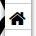

Help using the map
This map shows the archaeological finds and features (aka Monuments) and the digs and surveys that discovered them, within the historic city of Lancaster. The data is derived from the Lancaster Urban Archaeological Database, compiled by Oxford Archaeology North.
The map is composed of layers that represent the time-periods of the monuments and finds. Click the layers on the right to choose which periods you want to see displayed.
There are also layers for historic maps, for digs and surveys, and photographs.
Click on a feature on the map to see an information popup- click on the "more info" link in the popup to open more detailed information in another page in your browser.
You can search the active layers (the ones shown on the map) using the search button (top left) . Type a name or location in the search box that appears.
Zoom in and out using the scroll wheel on your mouse, or the plus and minus buttons on the map. Click and drag the map to pan around.
Click the home button  to return to the original location and zoom level.